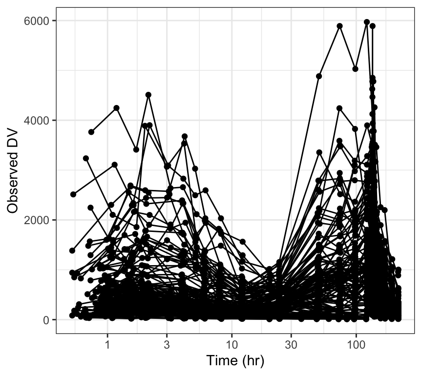
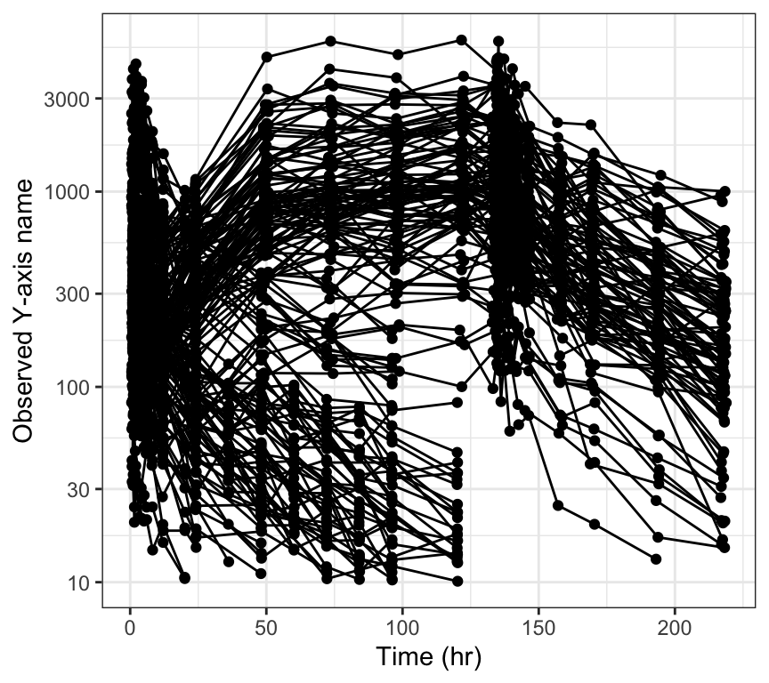
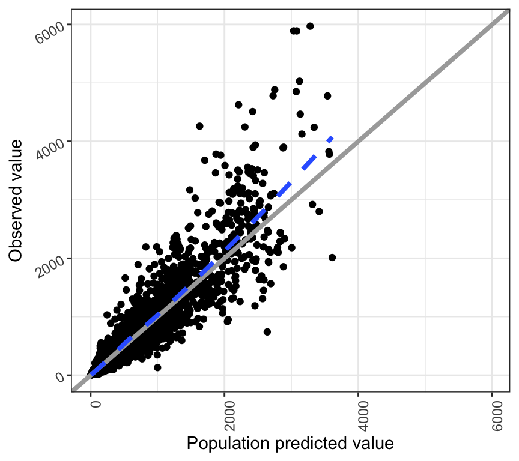
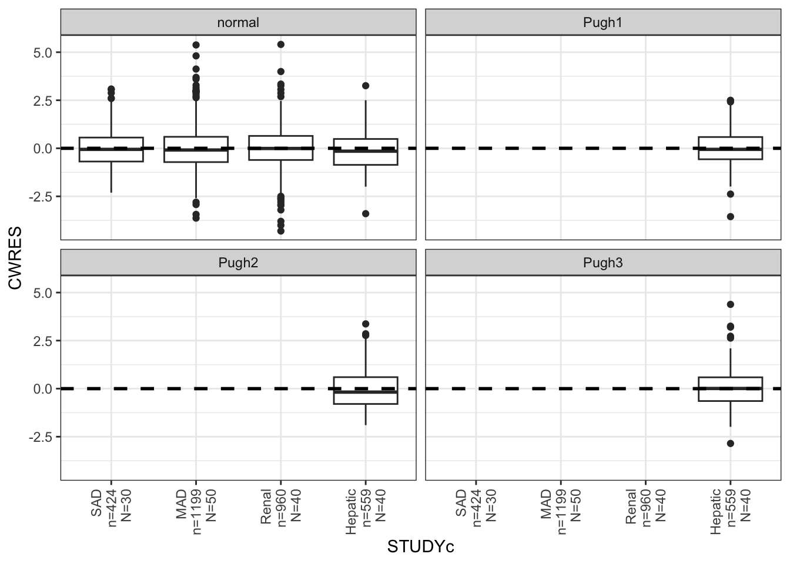
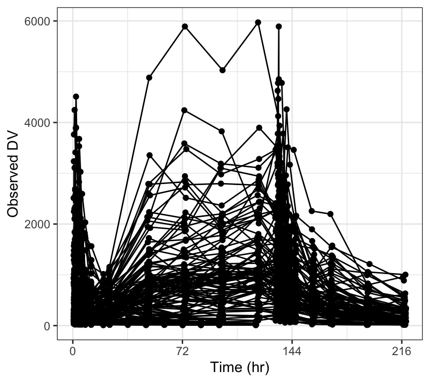

dv_pred(df)
“Layers” refer to different reference lines or smoothers that are added to plots by default.
Layers include
smoothhlineablineFor example, dv_pred() adds an identity line (y = x) for reference as well as a smoother through the data
dv_pred(df)
These layers can all be customized or dropped from the plot altogether. This section shows you how to do that. We’ll work on this basic plot as well as plots that come right out of pmplots.
p <- ggplot(df, aes(PRED, DV)) + geom_point() + pm_theme()
p
p + pm_smooth()or
layer_s(p)p + pm_abline()
or
layer_a(p)p + pm_hline(2000)
or
layer_h(p, hline = 2000)Set the layer to NULL to drop one or more of these layers from the plot.
dv_pred(df, smooth = NULL)
dv_pred(df, abline = NULL)cwres_time(df, hline = NULL)
dv_pred(df, abline = NULL, smooth = NULL)
You can also decline to add any layers through add_layers
dv_pred(df, add_layers = FALSE)For any layer type, you can pass a list of arguments that will get passed on to the appropriate geom.
For example, change the values of argument for ggplot2::geom_smooth()
cwres_time(
df,
smooth = list(method = "gam", se = TRUE)
)The items in the list getting passed as smooth should be arguments in ggplot2::geom_smooth().
Similarly, you can set abline with a list of arguments to get passed to geom_abline() or hline with a list of arguments to get passed to geom_hline().
wres_time(df) + geom_3s()You can pass lists of arguments as xs or ys to modify the x- or y-axis, respectively. These arguments get passed to ggplot2::scale_x_continuous() or ggplot2::scale_y_continuous().
To modify the x-axis of a plot, pass a list of items as the xs argument; these items will get passed to ggplot2::scale_x_continuous().
For example, to make the x-axis log transformed and modify the breaks, write
a <- list(trans = "log", breaks = logbr3())
dv_time(df, xs = a)
Note: that you can modify the x-axis label of a plot without modifying the scale using ggplot2::xlab()
dv_time(df) + xlab("Time (years)")
To modify the y-axis of a plot, pass a list of items as the ys argument; these items will get passed to ggplot2::scale_y_continuous().
For example, to make the y-axis log transformed and modify the breaks, write
dv_time(df, ys = a, yname = "Y-axis name")
There may also be a yname argument for a given plot that will let you directly change the y-axis label as in the example above.
Note: that you can modify the y-axis label of a plot without modifying the scale using ggplot2::ylab()
dv_time(df) + ylab("Concentration (centrigrams/gallon)")
dv_pred(df) + rot_x(angle = 90) + rot_y()
We are typically rotating the tick labels on the x-axis and frequently it is convenient to ask for a totally vertical rendering
cwres_cat(df, x = "STUDYc") +
facet_wrap(~CPc) + rot_x(vertical = TRUE)
If this is too cramped
cont_cat(
id,
y = c("WT", "BMI", "ALB", "CRCL"),
x = "STUDYc"
) %>% pm_grid()
Try this
cont_cat(
id,
y = c("WT", "BMI", "ALB", "CRCL"),
x = "STUDYc"
) %>% map(~.x+coord_flip()) %>% pm_grid()
pm_axis_time()[1] "TIME//Time {xunit}"pm_axis_tad()[1] "TAD//Time after dose {xunit}"pm_axis_tafd()[1] "TAFD//Time after first dose {xunit}"pm_axis_res()[1] "RES//Residual"pm_axis_wres()[1] "WRES//Weighted residual"pm_axis_cwres()[1] "CWRES//Conditional weighted residual"pm_axis_cwresi()[1] "CWRESI//CWRES with interaction"pm_axis_npde()[1] "NPDE//NPDE"pm_axis_dv()[1] "DV//Observed {yname}"pm_axis_pred()[1] "PRED//Population predicted {xname}"pm_axis_ipred()[1] "IPRED//Individual predicted {xname}"You can glue() in information with these functions
pm_axis_time("hr")[1] "TIME//Time (hr)"Similar with
pm_axis_tafd("hr")
pm_axis_tad("hr")And
pm_axis_dv("ASA concentration (ng/mL)")[1] "DV//Observed ASA concentration (ng/mL)"Similar with
pm_axis_pred("ASA concentration (ng/mL)")
pm_axis_ipred("ASA concentration (ng/mL)")logbr3() [1] 1e-10 3e-10 1e-09 3e-09 1e-08 3e-08 1e-07 3e-07 1e-06 3e-06 1e-05 3e-05
[13] 1e-04 3e-04 1e-03 3e-03 1e-02 3e-02 1e-01 3e-01 1e+00 3e+00 1e+01 3e+01
[25] 1e+02 3e+02 1e+03 3e+03 1e+04 3e+04 1e+05 3e+05 1e+06 3e+06 1e+07 3e+07
[37] 1e+08 3e+08 1e+09 3e+09 1e+10 3e+10logbr() [1] 1e-10 1e-09 1e-08 1e-07 1e-06 1e-05 1e-04 1e-03 1e-02 1e-01 1e+00 1e+01
[13] 1e+02 1e+03 1e+04 1e+05 1e+06 1e+07 1e+08 1e+09 1e+10Default breaks
dv_time(df)
Break every 3 days
dv_time(df, xby = 72)
Custom breaks and limits
a <- list(breaks = seq(0,240,48), limits = c(0,240))
dv_time(df, xs = a)p <- ggplot(df, aes(IPRED,DV)) + geom_point()
p
p + pm_theme()p + theme_plain()
p + pm_smooth()
p + pm_abline()
ggplot(df, aes(TIME,CWRES)) + geom_point() + pm_hline()
dv_pred(df, x = "PRED//Concentration ($\\mu$g)")data <- data.frame(
m = rnorm(100),
s = rnorm(100),
n = rnorm(100)
)
x <- c("m//$\\mu$", "s//$\\sigma$", "n//$\\nu$")
pairs_plot(data,x)
y <- c("WT//Weight (kg)", "BMI//BMI (kg/m$^2$)", "SCR//SCR (g/dL)")
wrap_cont_time(df, y = y, use_labels=TRUE)